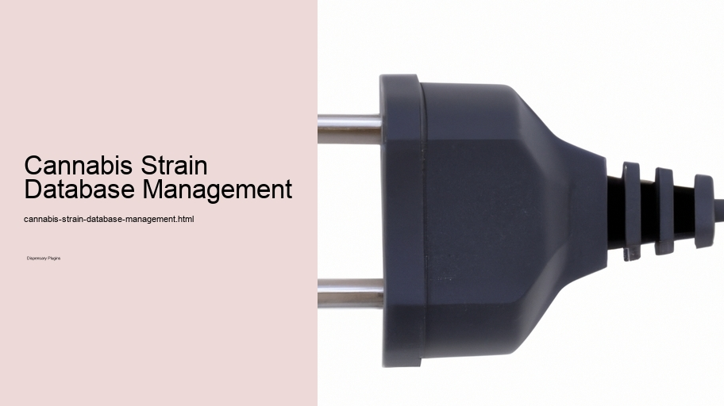

News
Cannabis Dispensary E-commerce Integration
Cannabis Dispensary E-commerce Integration
WooCommerce compatibility for cannabis products
Secure online payment gateways for dispensaries
Age verification plugins for legal compliance
Inventory management features for cannabis strains
Product variations for different types of cannabis eg indica sativa
Tax calculation tools specific to cannabis retail
Shipping and delivery options for dispensaries
Discount and coupon functionalities for promotions
Customer account creation and management
Reporting tools for sales and customer behavior
Cannabis Strain Database Management
Cannabis Strain Database Management
Custom post types for cannabis strains and products
Advanced search filters by potency effects or genetics
Detailed product pages with descriptions and images
User reviews and ratings system for strains
Integration with seedtosale tracking systems
Data importexport capabilities for strain information
Strain recommendation engine based on user preferences
Terpene profile display and educational resources
Crossselling features based on strain properties
Automatic updates of strain availability status
Regulatory Compliance Tools For Dispensaries
Regulatory Compliance Tools For Dispensaries
Statespecific compliance modules
Realtime legal updates notification system
Documentation generation eg purchase limits THC content
Childproof packaging notices
Legal disclaimer popups at checkout
Patient registration form integrations
Medical marijuana card verification systems
Security measures like SSL certificates
Data privacy tools compliant with regulations
Trackandtrace API integrations
Online Reservation And Pre-order System For Cannabis Products
Online Reservation And Pre-order System For Cannabis Products
Realtime inventory display
Clickandcollect functionality
Appointment booking module for consultations
Queue management features
SMSEmail notifications upon order readiness
Mobile app integration
Loyalty program integration
Userfriendly shopping cart experience
Personalized product recommendations
Order history logging and repeat order ease
Marketing And SEO Optimization For Cannabis Websites
Marketing And SEO Optimization For Cannabis Websites
SEO optimization tools tailored to dispensary products
Blogging platform integrations to educate about cannabis
Social media sharing buttons integration
Email marketing plugins compatible with the industry
Analytics dashboard customized to track relevant metrics
Local SEO features highlighting dispensary location
Content scheduling tools
Automated link building assistance
Metadata optimization tips
Sitemap generators specific to dispensary site structure
About Us
Contact Us

Cannabis Strain Database Management
In the ever-evolving landscape of cannabis cultivation, a database to manage various strains is not just beneficial; it's vital! Indeed, as growers and enthusiasts strive for higher quality and diverse effects, keeping track of genetic information (alongside phenotypic characteristics) becomes a complex task. Yet, such databases are not commonly developed with ease or speed in mind.
Now, consider the challenges faced by cultivators. They've got to monitor countless variables like THC content, CBD ratios, flowering times - oh boy! The list goes on and on. A robust strain management system would seamlessly integrate these data points, allowing users to swiftly navigate through vast sea of information. Unfortunately, most systems currently in place are less intuitive than desired.
However, there's hope for improvement (thank goodness!). With advancements in technology and software development methodologies – including agile practices – we're starting to see databases that are more user-friendly and adaptable to the needs of their users. Moreover, such platforms can facilitate community involvement too; imagine being able to share your grow-op successes with fellow aficionados across the globe!
Transitioning from the technical aspects: Let’s talk about usability. A top-notch strain database shouldn't only be rich in features but also approachable enough for even a novice user to understand without getting lost in a maze of data fields and taxonomies. It should feel like having a knowledgeable friend at your side rather than wrestling with an unruly beast of binary code!
All things considered, while constructing this perfect repository may seem daunting – what with all its bells and whistles – it’s crucial for pushing forward our comprehension (and appreciation!) of cannabis variety. We mustn't forget that despite its complexity, such an endeavor is incredibly rewarding: both scientifically and culturally speaking.
There you have it; managing a cannabis strain library ain’t no walk in the park! But hey!, with ongoing technological strides coupled with real-world feedback from day-to-day users (you know who you are!), we'll eventually get there – one byte at a time.
Cannabis Dispensary E-commerce Integration
Custom post types for cannabis strains and products
index.html
woocommerce-compatibility-for-cannabis-products.html
secure-online-payment-gateways-for-dispensaries.html
age-verification-plugins-for-legal-compliance.html
inventory-management-features-for-cannabis-strains.html
product-variations-for-different-types-of-cannabis-eg-indica-sativa.html
tax-calculation-tools-specific-to-cannabis-retail.html
shipping-and-delivery-options-for-dispensaries.html
discount-and-coupon-functionalities-for-promotions.html
customer-account-creation-and-management.html
reporting-tools-for-sales-and-customer-behavior.html
cannabis-strain-database-management.html
custom-post-types-for-cannabis-strains-and-products.html
advanced-search-filters-by-potency-effects-or-genetics.html
detailed-product-pages-with-descriptions-and-images.html
user-reviews-and-ratings-system-for-strains.html
integration-with-seedtosale-tracking-systems.html
data-importexport-capabilities-for-strain-information.html
strain-recommendation-engine-based-on-user-preferences.html
terpene-profile-display-and-educational-resources.html
crossselling-features-based-on-strain-properties.html
automatic-updates-of-strain-availability-status.html
regulatory-compliance-tools-for-dispensaries.html
statespecific-compliance-modules.html
realtime-legal-updates-notification-system.html
documentation-generation-eg-purchase-limits-thc-content.html
childproof-packaging-notices.html
legal-disclaimer-popups-at-checkout.html
patient-registration-form-integrations.html
medical-marijuana-card-verification-systems.html
security-measures-like-ssl-certificates.html
data-privacy-tools-compliant-with-regulations.html
trackandtrace-api-integrations.html
online-reservation-and-pre-order-system-for-cannabis-products.html
realtime-inventory-display.html
clickandcollect-functionality.html
appointment-booking-module-for-consultations.html
queue-management-features.html
smsemail-notifications-upon-order-readiness.html
mobile-app-integration.html
loyalty-program-integration.html
userfriendly-shopping-cart-experience.html
personalized-product-recommendations.html
order-history-logging-and-repeat-order-ease.html
marketing-and-seo-optimization-for-cannabis-websites.html
seo-optimization-tools-tailored-to-dispensary-products.html
blogging-platform-integrations-to-educate-about-cannabis.html
social-media-sharing-buttons-integration.html
email-marketing-plugins-compatible-with-the-industry.html
analytics-dashboard-customized-to-track-relevant-metrics.html
local-seo-features-highlighting-dispensary-location.html
content-scheduling-tools.html
automated-link-building-assistance.html
metadata-optimization-tips.html
sitemap-generators-specific-to-dispensary-site-structure.html
privacy-policy.html
sitemap.html
sitemap.xml
about-us.html
feed.xml
Frequently Asked Questions
What features does the cannabis dispensary WordPress plugin provide for managing a strain database?
The plugin typically offers features like adding and categorizing strains, detailing THC/CBD content and other cannabinoids, describing effects and medical uses, managing inventory levels, uploading images, and integrating with e-commerce for online sales.
How is strain data kept up-to-date within the plugin?
Strain data can be updated manually by dispensary staff through the WordPress admin dashboard. Some plugins may also offer import/export functions to bulk update strain information or integration with third-party APIs that automatically sync data from external sources.
Can customers search and filter cannabis strains using the plugin?
Yes, most cannabis dispensary plugins allow customers to search for specific strains and use filters such as type (indica, sativa, hybrid), potency, effects, medical benefits, or price range to find what theyre looking for easily on the dispensarys website.
Is it possible to ensure compliance with local cannabis regulations using the plugin?
While some plugins may include features designed to help with compliance (like age verification prompts or purchase limits), it is ultimately the responsibility of the dispensary to ensure that their website and operations comply with all local laws and regulations pertaining to cannabis sales and marketing.